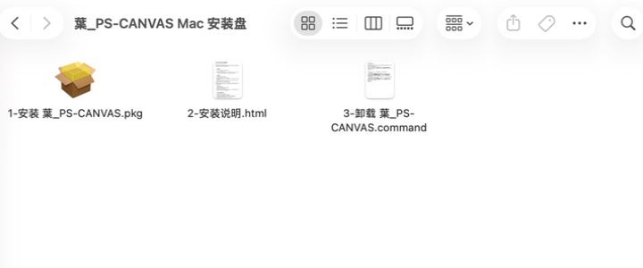
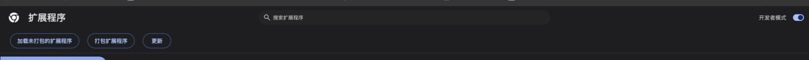
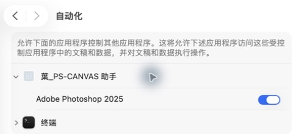
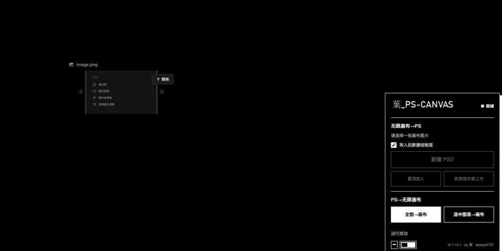
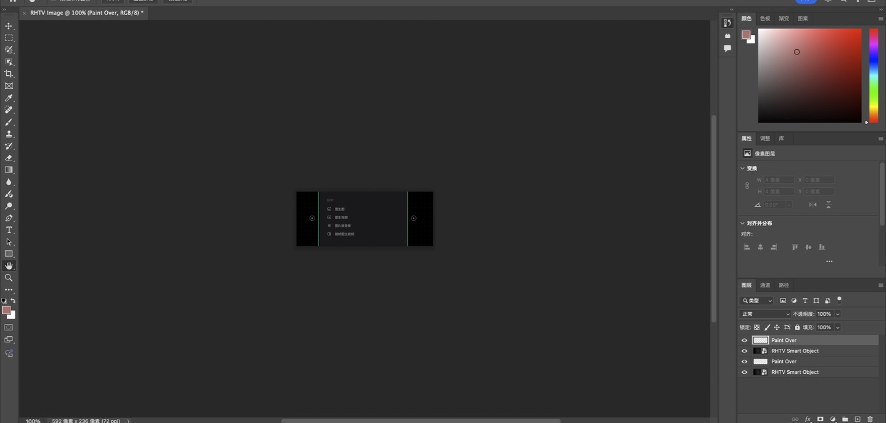

macOS 安装与使用指南
把中国版 RunningHub 无限画布中的图片送进 Photoshop，也可以把 Photoshop 全图或选中图层传回画布。本页覆盖安装、扩展、系统权限、首次验证和故障排查。
1. 下载并安装 r5
发布后从固定的 r5 预发布页下载，不使用可能跳过预发布版本的“latest”链接。
文件：葉_PS-CANVAS v0.1.13.1-Mac-r5-学员安装盘.dmg
SHA256：4d778f4879471eeb955eec8efa990dab7d4aa9fa609272d060f86ac2b126f935
可在“终端”中输入 shasum -a 256，然后把 DMG 拖进终端窗口，回车后与上面的值比较。
- 双击 DMG，确认看到安装 PKG、安装说明和卸载入口。
- 双击
1-安装 葉_PS-CANVAS.pkg，按安装器提示完成安装。 - 安装结束后不要只停在安装器页面，继续加载 Chrome 扩展和设置权限。

2. 加载 Chrome 扩展
扩展已经随本机桥接安装，不需要在 Finder 中手动寻找源码。固定目录是：
/Library/Application Support/葉_PS-CANVAS/current/extension
- 打开安装后的“葉_PS-CANVAS 助手”，点击“复制插件路径”。
- 在 Chrome 地址栏打开
chrome://extensions/。 - 打开右上角“开发者模式”，点击“加载未打包的扩展程序”。
- 在文件选择窗口按
Shift + Command + G打开“前往文件夹”；如果键盘不方便，也可以通过 Finder 菜单“前往 → 前往文件夹”进入。 - 粘贴上面的固定路径，选中
extension文件夹。 - 回到 RunningHub 画布并刷新页面。

3. 开启辅助功能和自动化
- 打开“系统设置 → 隐私与安全性 → 辅助功能”，确保“葉_PS-CANVAS 助手”开关处于开启状态。
- 打开“系统设置 → 隐私与安全性 → 自动化”，展开“葉_PS-CANVAS 助手”，确保 Adobe Photoshop 开关处于开启状态。
- 如果系统首次传输时弹出授权窗口，选择允许，然后回到 RunningHub 重试。

临时签名版本升级后，macOS 可能保留旧授权界面。先把对应开关关闭，再重新开启；随后退出并重新打开 Chrome、Photoshop 和助手。r2 还存在 Node 父进程身份问题，反复切换权限不能根治，请直接升级到 r5。
4. 前三项通过，本地安装就完成
助手诊断中的前三项全部通过，即代表本地安装完整成功：
- 本地安装文件、Chrome、扩展、Native Messaging 和协议自检正常
- 找到受支持的 Photoshop
- 辅助功能与 Photoshop 自动化权限正常
后面的两项不是安装条件，而是进入 RunningHub 后的首次功能验证：RunningHub → Photoshop 和 Photoshop → RunningHub。
5. 打开正确的 RunningHub 画布
r5 同时支持以下两种中国版具体画布地址：
https://rhtv.runninghub.cn/projects/canvas/<项目ID>
https://rhtv.runninghub.cn/project/canvas/<项目ID>
带语言前缀的地址也支持。项目首页、/projects/ 列表页和海外版 rhtv.runninghub.ai 不会显示插件面板。

RunningHub → Photoshop
| 操作 | 结果 |
|---|---|
| 新建 PSD | 按输入图片尺寸新建文档，并创建 RHTV Smart Object 与 Paint Over 图层。 |
| 置顶放入 | 把图片作为智能对象放到当前文档顶部。 |
| 放到选中层上方 | 把图片放在 Photoshop 当前选中图层的上方。 |
Photoshop → RunningHub
“全图 → 画布”回传当前文档的合成结果；“选中图层 → 画布”只回传当前选中图层。传输前请确认原 RunningHub 画布标签仍然存在。

6. 诊断、日志与常见错误
请优先从助手导出诊断报告。报告会记录实际执行模式；r5 应显示 launchservices-app，预期负责进程是 cn.ayeaye.pscanvas.helper。
| 位置 | 用途 |
|---|---|
~/Library/Logs/葉_PS-CANVAS/bridge.jsonl | 网页请求、图片处理、助手调用和结果 |
~/Library/Logs/葉_PS-CANVAS/helper.jsonl | Photoshop 版本、权限状态、AppleScript 错误和结果 |
| 助手中的“导出诊断” | 汇总版本、架构、权限、执行模式和最近一次脱敏错误 |
MACOS_AUTOMATION_DENIED。r3 起改用独立助手 App 的 LaunchServices 通道；r4 在旧版本覆盖安装时可能被 PackageKit 重定位助手。请使用 r5，它同时包含自动化身份、升级安装和两种画布地址修复。日志会按请求编号串联，但提交公开问题前仍请检查并遮盖个人路径。日志不会记录完整图片 URL、Cookie、令牌或图片内容。
7. 卸载
- 重新打开 DMG，双击
3-卸载 葉_PS-CANVAS.command。 - 在
chrome://extensions/中移除 PS Web Bridge。 - 如不再使用，可在系统设置中移除助手的辅助功能与自动化权限。
macOS quick start
The internal r5 DMG supports both Intel and Apple Silicon Macs running macOS 14 or later. It is ad-hoc signed and not Apple-notarized. Install the PKG, load the unpacked Chrome extension from /Library/Application Support/葉_PS-CANVAS/current/extension, then allow Accessibility and Photoshop Automation for the helper app.
The extension supports concrete China-site canvas URLs under both /projects/canvas/<id> and /project/canvas/<id>. The overseas .ai site and project-list pages are intentionally unsupported. The first three checks in the helper mean local installation is complete; the two transfer checks are completed afterward on RunningHub.